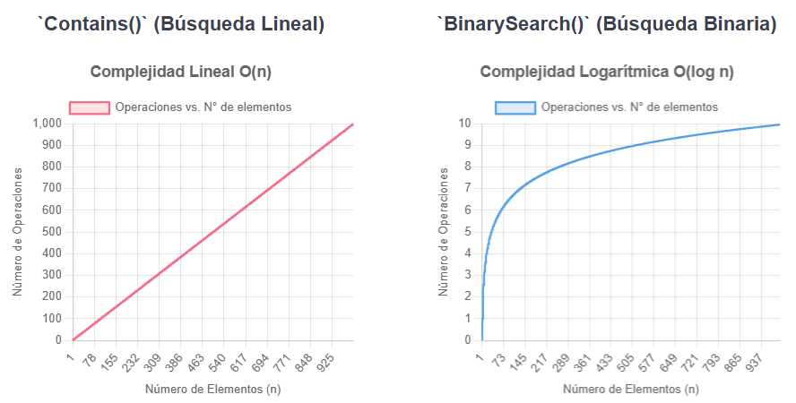

Descargar estos apunte en pdf o html
Uno de los casos más comunes de usu de tipos genéricos o parametrizados, son el de las colecciones. Donde se nos pide que implementemos una colección de objetos de un tipo concreto, pero las operaciones de añadir, eliminar, buscar, etc. son idénticas independientemente del tipo de objeto que se almacene en la colección. Por esta razón, C# utilizará el mecanismo de clases parametrizadas o clases genéricas para poder solucionar este problema.
Una colección es un tipo de dato cuyos objetos almacenan otros objetos. Un ejemplo típico son las tablas, aunque en la BCL se incluyen muchas otras clases de colecciones que iremos viendo a lo largo de este tema. En las versiones recientes de C# las podemos encontrar en System.Collections.Generic.
Aunque las colecciones predefinidas incluidas en la BCL disponen de miembros propios con los que manipularlas, todas incluyen al menos los miembros de ICollection<T>. En realidad la interfaz ICollection<T> hereda de:
IEnumerable<T> que permite que sean recorridas con la instrucción foreach usando el patrón iterador.IClonable, formada por un único método object Clone() que devuelve una copia del objeto sobre el que se aplica.A lo largo del tema veremos que hay muchas colecciones parecidas, donde la única diferencia es la 'eficiencia' de un cierto tipo de operaciones sobre otras. Por eso, deberemos escoger cuidadosamente el tipo de colección dependiendo de las casuísticas que se nos puedan dar en nuestro programa.
Con esto en mente, veamos algunas de las colecciones más utilizadas en C# y cuando utilizarlas.
Ya hemos hablado de ellas y las venimos usando desde la unidad 14 donde vimos las relaciones todo-parte.
Recordemos que se implementan a través del tipo List<T>, que son equivalentes a los arrays. Esto es, internamente se almacenan como un array, y su tamaño crecerá automáticamente cuando se añadan más elementos de los que puede almacenar el array interno. Pero estos cambios de tamaño estarán optimizados para que no se realicen con demasiada frecuencia y serán transparentes para el usuario.
por esta razón, permitirá accesos y modificaciones eficientes a través del operador [] y un índice entero. Sin embargo, añadir y borrar elementos puede ser más costoso. Recordemos por encima su uso...
List<int> numeros1 = []; // Lista vacía de enteros
List<int> numeros2 = [1, 2, 3, 4, 5]; // Lista de enteros con 5 elementos
List<int> numeros3 = [..numeros1, ..numeros2]; // Lista de enteros con los elementos de numeros1 y numeros2
numeros1.Add(6); // Añade el elemento 6 al final de la lista
numeros1.AddRange([7, 8]); // Añade los elementos 7 y 8 al final de la lista
numeros1.Insert(0, 5); // Inserta el elemento 5 en la posición 0
numeros1.InsertRange(0, [1,2,3,4]); // Inserta los elementos 1,2,3 y 4 en la posición 0
// numeros1 ahora es [1,2,3,4,5,6,7,8]
int primero = numeros1[0]; // primero es 1
numeros1[0] = 10; // Modifica el primer elemento a 10
// numeros1 ahora es [10,2,3,4,5,6,7,8]
numeros1.Remove(10); // Elimina el elemento 10
numeros1.RemoveAt(0); // Elimina el elemento en la posición 0
numeros1.RemoveRange(0, 2); // Elimina 2 elementos a partir de la posición 0
// numeros1 ahora es [3,4,5,6,7,8]
Ya hemos visto en unidades anteriores y cuando explicamos los interfaces que podemos ordenarlas con el método Sort(). Si el tipo de dato almacenado implementa la interfaz IComparable<T> (como los tipos numéricos y cadenas) se ordenarán de forma natural.
List<string> nombres = ["Juan", "Pedro", "Luis", "Ana"];
nombres.Sort();
Pero,... ¿Qué sucede si el tipo de dato es una clase que no hemos definido nosotros o no podemos modificar porque está en una librería y por tanto no podemos implementar la interfaz IComparable<T>?
En este caso, podemos usar el patrón 'Strategy' pasándole al método Sort() un objeto que implemente la interfaz IComparer<T>. Esta interfaz define el método int Compare(T x, T y) que devuelve un valor negativo si x < y, cero si son iguales y un valor positivo si x > y.
Ejemplo:
Supongamos que tenemos la siguiente clase Empleado que no implementa la interfaz IComparable<T> y la cual no podemos modificar:
public record Empleado(string Nombre, double Sueldo);
Si ejecutamos el siguiente código:
public static void Main()
{
List<Empleado> empleados =
[
new(Nombre: "Juanjo", Sueldo: 2000),
new(Nombre: "Carmen", Sueldo: 2800),
new(Nombre: "Xusa", Sueldo: 2400)
];
empleados.Sort();
Console.WriteLine(string.Join("\n", empleados));
}
❌ Obtendremos un error en tiempo de ejecución:
System.InvalidOperationException: 'Failed to compare two elements in the array.'
Ahora implementamos la clase OrdenaPorSueldo que implementa la interfaz IComparer<Empleado> y la usamos para ordenar la lista de empleados por sueldo:
public class ComparaEmpleadoPorSueldo : IComparer<Empleado>
{
public int Compare(Empleado? x, Empleado? y) => (x, y) switch
{
(null, null) => 0,
(null, _) => -1,
(_, null) => 1,
_ => x.Sueldo.CompareTo(y.Sueldo)
};
}
Ahora si ejecutamos el siguiente código...
empleados.Sort(new ComparaEmpleadoPorSueldo());
✅ Obtendremos la lista de empleados ordenada por sueldo.
Nota
Es importante destacar que más adelante en el curso, cuando veamos programación funcional, veremos que en C# las listas implementan muchos otros métodos de extensión para buscar, filtrar, transformar, etc. como Find(), FindAll(), Where(), Select(), etc y que de momento no podemos usar.
Contains(T item): nos permite saber si un elemento está en la lista haciendo una búsqueda lineal o secuencial. Solo deberíamos usarla si:
record class o record struct.IEquatable<T>Equals(object? obj) y GetHashCode().En el siguiente ejemplo, la clase Empleado es un record class y por tanto podemos usar el método Contains() para buscar un empleado en la lista:
public record Empleado(string Nombre, double Sueldo);
empleados.Contains(new (Nombre: "Carmen", Sueldo: 2800));
Pero..., ¿Qué sucede si no podemos modificar la clase Empleado es una clase con estado, no tiene implementada la interfaz IEquatable<T> y no hemos sobrescrito los métodos Equals(object? obj) y GetHashCode()?
public class Empleado
{
public string Id {get;}
public string Nombre {get;}
public double Sueldo {get;}
public Empleado(
string id,
string nombre,
double sueldo)
{
Id = id;
Nombre = nombre;
Sueldo = sueldo;
}
}
Usaremos el patrón 'Strategy' pasándole al método Contains() un objeto que implemente la interfaz IEqualityComparer<T> como por ejemplo:
public class IgualdadEmpleadosPorId: IEqualityComparer<Empleado>
{
public bool Equals(Empleado? x, Empleado? y) => (x, y) switch
{
(null, null) => true,
(null, _) => false,
(_, null) => false,
_ => x.Id == y.Id // Compara por el Id
};
public int GetHashCode(Empleado obj) => obj.Id.GetHashCode();
}
Ahora el siguiente programa principal funcionaria correctamente...
public static void Main()
{
List<Empleado> empleados =
[
new(id: "001", nombre: "Juanjo", sueldo: 2000),
new(id: "002", nombre: "Carmen", sueldo: 2800),
new(id: "003", nombre: "Xusa", sueldo: 2400)
];
bool encontrado = empleados.Contains(
value: new("002", "Carmen", 2800),
comparer: new IgualdadEmpleadosPorId());
}
IndexOf(T item): Si queremos encontrar un elemento por posición. El esquema de pasar una clase que implemente la estrategia de búsqueda no sería posible. Deberíamos poder modificar el tipo T para que implemente EqualityComparer<T> o debería ya implementarlo. Por lo que no es un método tan flexible como Contains(T item).
BinarySearch(T item): Nos devolverá el índice del elemento buscado si lo encuentra o un valor negativo si no lo encuentra. Para ello usará una búsqueda binaria como su nombre indica, pero solo funcionará si la lista está ordenada y el tipo de dato almacenado implementa la interfaz IComparable<T> o le pasamos un objeto que implemente la interfaz IComparer<T> al método BinarySearch(T item, IComparer<T> comparer) como sucedió con el método Sort(). Por tanto, deberemos usarlo en combinación con este último método. Por ejemplo, si partimos del ejemplo de la clase Empleado que no implementa la interfaz IComparable<T> y no podemos modificarla, podríamos ordenas y buscar un empleado por su Id de la siguiente forma:
public class ComparaEmpleado : IComparer<Empleado>
{
public int Compare(Empleado? x, Empleado? y) => (x, y) switch
{
(null, null) => 0,
(null, _) => -1,
(_, null) => 1,
_ => x.Id.CompareTo(y.Id)
};
}
IComparer<Empleado> comparaEmpleados = new ComparaEmpleado();
empleados.Sort(comparaEmpleados);
bool encontrado = empleados.BinarySearch(
item: new Empleado(id: "002", nombre: "Carmen", sueldo: 2800),
comparer: comparaEmpleados) >= 0;
¿Qué ventaja nos aporta BinarySearch() frente a Contains() si tengo que ordenar antes?
Pues que BinarySearch() tiene una complejidad logarítmica frente a la complejidad de lineal de Contains(). Por tanto, si vamos a realizar muchas búsquedas en una lista o esta tiene muchos elementos, es mejor ordenarla y usar BinarySearch().
Fíjate que el número de operaciones que realiza BinarySearch() apenas crece al aumentar el número de elementos, mientras que el número de operaciones de Contains() crece linealmente.

Las tablas hash o Diccionarios, son otro tipo de colecciones, pero que tienen un comportamiento particular.
Hasta ahora, todos los elementos de una colección se acceden a través de un índice numérico. Si tenemos una lista, el primer elemento ocupa la posición 0, el siguiente la 1, etc. Si queremos acceder al cuarto elemento de una lista llamada miLista, tenemos que poner miLista[3], y si no sabemos la posición debemos usar un bucle.
Para evitar el bucle y realizar un acceso directo podemos usar tablas hash. En este tipo de colecciones, cada dato que agregamos a ella no tiene asociado un índice numérico, sino un objeto clave que lo identifica. De esta manera, si conocemos la clave del dato, podemos acceder directamente a sus datos sin tener que recorrer toda la lista.
Por ejemplo, podemos asociar el dni de cada persona con sus datos completos, teniendo al final una tabla como esta:
| Clave | Valor |
|---|---|
| 11224441K | Nombre = "Pepe" Edad = 30 |
| 11335499M | Nombre = "María" Edad = 22 |
| 12345678O | Nombre = "Juan" Edad = 33 |
| 13898743Y | Nombre = "Sara" Edad = 27 |
Importante
Si quiero consultar los datos de María, buscaré por su clave que es su dni. Fíjate que la clave puede ser cualquier tipo de dato. En este caso es un string, pero podrían ser enteros u otro tipo cualquiera, siempre que nos aseguremos que no haya dos claves repetidas.
Si nos fijamos, el funcionamiento es similar a un diccionario real. Si quiero consultar el significado de una palabra y sé cuál es esa palabra, voy a la página donde está y la consulto, sin tener que ir palabra a palabra comprobando si es esa la que busco.
Como ya hemos comentado, las tablas hash en C# se manejan con el TAD Dictionary<K, V> y SortedDictionary<K, V>. La diferencia entre ambos es que el primero no garantiza ningún orden en los elementos, mientras que el segundo los mantiene ordenados por la clave. Se pierde un poco más de tiempo insertando elementos, pero se gana en rapidez en las búsquedas porque todas las búsquedas por clave serán binarias.
Nota
Para los ejemplos de diccionarios vamos a partir de la clase Empleado y el código que usamos en la búsqueda lineal y binaria en listas. Puedes ver el código completo aquí: busquedas_list.cs
Es importante tener en cuenta que los elementos de esta colección serán objetos del tipo KeyValuePair<TClave, TValor> que guardará una clave y su valor. No obstante, muy raramente los vamos a trabajar a través de él.
Podemos crear un diccionario en C# inicializándolo de la siguiente forma...
Dictionary<TClave, TValor> tabla = new Dictionary<TClave, TValor>();
Dictionary<TClave, TValor> tabla = [];
Dictionary<TClave, TValor> tabla = [ {clave1, valor1}, {clave2, valor2}, ... ];
Añadir un dato al diccionario creado, se puede realizar de varias formas, una de ellas es usar el método Add, indicando la clave que queremos asociar a cada elemento y el elemento en sí.
💀 La operación
Addgenerará una excepción si añadimos una clave ya existente.
Si por ejemplo estamos haciendo una tabla de elementos de tipo Persona, la clave puede ser el dni de la persona en sí, y el elemento a guardar el resto de datos podríamos hacer...
static Dictionary<string, Persona> LeeDatos()
{
Dictionary<string, Persona> personas = new Dictionary<string, Persona>();
Console.Write("Introduce las persona a leer: ");
int numeroPersonas = int.Parse(Console.ReadLine()!);
for (int i = 0; i < numeroPersonas; i++)
{
Console.Write($"DNI {i + 1}: ");
string dni = Console.ReadLine()!;
Console.Write($"Nombre {i + 1}: ");
string nombre = Console.ReadLine()!;
Console.Write($"Edad {i + 1}: ");
int edad = int.Parse(Console.ReadLine()!);
// Añadir con el método add.
personas.Add(dni, new Persona(nombre, edad));
}
return personas;
}
Eliminar un dato de la lista, para ello usamos el método Remove con la clave del valor que queremos eliminar como argumento. Si no existe la clave obtendremos una excepción.
personas.Remove("11223314L")
Modificar/Añadir el valor de un dato almacenado en el diccionario. También se accede indizando la clave y se asigna el objeto.
personas["11224441K"] = new Persona("Pepe", 31)
✋ Importante: Funciona igual que el
Addsolo que si la clave existe modificará su valor asociado sin generar una excepción.
💀 Además, como en el caso del borrado, si intentamos acceder a un valor del Dictionary del que no existe la clave el sistema lanzará una excepción. Por lo que es buena práctica utilizar el métodoContainsKey(clave), para comprobar si existe la clave antes de acceder al valor a través de ella.
Para obtener claves y valores por separado dispondremos de las propiedades Keys y Values que me devolverán una secuencia que implementa IEnumerable<T> y que por ende puedo transformar a algún tipo de colección de las que conocemos ya sea un array o una lista como hemos visto a lo largo del tema.
List<string> litaDNIs = new List<string>(personas.Keys);
Persona[] arrayPersonas = Enumerable.ToArray<Persona>(personas.Values);
Recorrer diccionarios no es lo común, ya que su acceso es mediante clave. Aunque se puede realizar el acceso a todos los elementos usando un foreach.
Por ejemplo, este bucle saca las edades de todas las personas:
foreach (string dni in personas.Keys)
Console.WriteLine(personas[dni].Edad);
📌 Nota: Es posible que el orden de salida no sea el mismo que cuando se introdujeron los datos, ya que las tablas hash tienen un mecanismo de ordenación diferente.
Realmente si tenemos en cuenta que nuestro diccionario realmente es una secuencia de valores del tipo KeyValuePair<string, Persona>. Podríamos recorrer sus valores también de la siguiente forma...
foreach (KeyValuePair<string, Persona> par in personas)
Console.WriteLine($"{par.Key}: {par.Value}");
Para entender alguna de las propiedades y métodos que implementa la clase Dictionary<K, V> deberemos entender como funcionan los mismos internamente. Para ello, supongamos la tabla de pares clave-valor que hemos puesto antes de ejemplo. Donde la clave era un string con el DNI y el valor un objeto de tipo Persona.
Una posible aproximación a como se organiza la información internamente podría ser el siguiente....
📌 Nota: Para simplificar no hemos representado las referencias a los objetos
stringypersona
Si nos fijamos, internamente el diccionario guarda una tabla de n elementos de capacidad y esto es importante para que funcionen de manera eficiente. De hecho si a priori conocemos cuantos elementos va a tener diccionario podremos dimensionarla en el constructor. Por ejemplo, si queremos que tenga una capacidad de 1000 como en nuestro ejemplo podríamos construir el diccionario de la siguiente manara ...
var personas = new Dictionary<string, Persona>(1000);
Internamente calcula el Hash de la clave. En C# el Hash es un valor numérico entero que se obtiene a través del método GetHashCode() que cualquier objeto implemente por estar definido en la clase Object como virtual y que por tanto podremos invalidar en nuestras definiciones de tipos.
Si consultamos como funciona la función de Hash por ejemplo en la Wikipedia podemos deducir que, para un determinado estado de un objeto, esta me devuelve un valor numérico 'único'.
Pero... ¿Para que nos sirve calcular el Hash de la clave?. Si nos fijamos en el diagrama, lo que hace el diccionario es calcular el módulo del Hash entre la capacidad de la tabla Hash % 1000 esto nos asegurará obtener un resto entre 0 y 999 que son índices válidos para la tabla definida. Por tanto, podemos inferir que el Hash me permitirá crear una correspondencia entre los objetos usados como clave (string en nuestro caso) y un índice dónde guardar el valor asociado en la tabla, tal y como se muestra en la ilustración.
Pero... ¿Si la tabla tiene poca capacidad entonces, las posibilidades de que el resto de dividir el Hash de dos claves por el tamaño me de el mismo índice es muy alta?. Efectivamente, por eso si nos fijamos en la ilustración hay dos DNI que al dar el mismo índice se deben guardar en la misma posición, por ejemplo a través de una lista enlazada. Una vez vamos a esa posición de la tabla deberemos buscar la clave en la lista. Es por esa razón, que cada registro de la lista guarda pares de clave-valor y no únicamente el valor. Además, para saber buscar la clave en la lista deberemos saber si dos claves son iguales y por ello los objetos que usemos como clave deben implementar la interfaz IEquatable<T>.
✋ Importante: No debemos preocuparnos por los tipos básicos y los definidos en las BCL, puesto que
IEquatable<T>está implementado en todos ellos.📣 Resumen:
Podemos decir que para que un tipo pueda hacer de clave debe invalidar
GetHashCode()y debe implementarIEquatable<T>. Afortunadamente, no debemos preocuparnos porque los tipos básicos y los definidos en las BCL cumplen estas condiciones.
💡 Tips: Del funcionamiento descrito podemos entender los siguiente métodos de optimización y rendimiento de los diccionarios ...
int EnsureCapacity(int capacity)
EnsureCapacity me permitirá definir el tamaño de la tabla interna del diccionario si tengo muchas entradas evitando así que se repitan índices en las claves.
void TrimExcess()
TrimExcess si he realizado un Clear() o voy a tener pocos elementos en el diccionario me permitirá reducir el tamaño de la tabla adecuándolo al número de entradas.
Imaginemos que queremos definir un diccionario donde la clave ahora será la clase Persona que hemos utilizado a lo largo del tema y el valor será una lista de cadenas con los nombres de las mascotas de esa persona.
La definición básica del tipo Persona para usarlo como clave sería la siguiente...
// Debe implementar IEquatable<Persona>
class Persona : IEquatable<Persona>
{
public string Nombre { get; }
public int Edad { get; private set; }
public Persona(string nombre, int edad)
{
Nombre = nombre;
Edad = edad;
}
// Es interesante que redefinamos el ToString para que represente el estado del
// objeto mediante una cadena.
public override string ToString() => $"{Nombre} {Edad} años";
// Invalidamos GetHashCode() y una forma simple es usar la función
// HashCode.Combine(...) para generar el hashcode a partir de los parámetros.
public override int GetHashCode() => HashCode.Combine(Nombre, Edad);
// Implementamos el interfaz, que nos obliga a implementar Equals y podemos
// comparar fácilmente dos objetos, viendo si tienen el mismo Hash o no.
public bool Equals([AllowNull] Persona o)
=> o != null && Nombre == o.Nombre && Edad == o.Edad;
// Comparar por HasCode no sería una opción válida ya que según la longitud
// del Hash existe la posibilidad de que objetos diferentes me devuelvan el
// el mismo Hash.
}
Analicemos la siguiente propuesta código de ejemplo comentado donde usamos la clase Persona que hemos definido como clave...
public static void Main()
{
// Definimos el diccionario donde la clave es una persona y
// el valor una lista de mascotas.
Dictionary<Persona, List<string>> mascotasXPersona = new();
// Creamos un objeto persona pepe y para ese objeto
// añadimos una lista vacía de mascotas.
Persona pepe = new Persona("Pepe", 30);
mascotasXPersona.Add(pepe, new List<string>());
// Usamos la misma referencia al objeto pepe para acceder
// a su lista de mascotas y añadir dos nombres.
mascotasXPersona[pepe].Add("Snowball");
mascotasXPersona[pepe].Add("Velvet");
// Creamos un objeto persona de nombre María del que no nos guardamos la
// referencia y añadimos una lista inicializada en la definición con dos mascotas.
mascotasXPersona.Add(new Persona("María", 22), new List<string>(){"Simba", "Bella"});
// Añadimos una tercera mascota a María, pero volvemos a instanciar otro objeto
// Persona para María porque no nos guardamos la referencia como con pepe.
// No debería ser problema porque ambos deberían generar el mismo Hash y además
// sabemos comparar objetos persona con Equal.
mascotasXPersona[new Persona("María", 22)].Add("Lucy");
// Mostramos la lista de mascotas por persona.
foreach (Persona p in mascotasXPersona.Keys)
Console.WriteLine($"{p}: {string.Join(", ", mascotasXPersona[p])}");
}
Prueba a ejecutar este código y comprueba que funciona correctamente. Prueba ahora a eliminar la invalidación de GetHashCode() de Persona y ver que sucede. Deberías obtener un error en la línea 24 puesto que estamos intentado usar como clave de acceso un objeto Persona de nombre María y edad 22 años que 'supuestamente' no está definida en el diccionario porque su Hash es diferente al del objeto con que se añadió.
🎓 Caso de estudio:
Vamos su uso a través de un simple programa de ejemplo que realice un pequeño examen sobre las capitales de la UE. Para ello, el programa preguntará 5 capitales. Puntuando con 2 puntos cada pregunta acertada.
Veamos una posible solución usando diccionarios y otras colecciones vistas en el tema...
static void Main()
{
// Definimos el diccionario con los países y sus capitales.
Dictionary<string, string> capitalesPorPais = new Dictionary<string, string>()
{
{"España", "Madrid"}, // Par clave país, valor capital.
{"Portugal", "Lisboa"},
{"Francia", "Paris"},
{"Luxemburgo", "Luxemburgo"},
{"Irlanda", "Dublin"}
};
// Aunque hemos definido por extensión. Podemos añadir elemetos a posteriori.
capitalesPorPais.Add("Belgica", "Bruselas");
capitalesPorPais["Alemania"] = "Berlin";
// Obtenemos una lista de claves indizable por un entero.
List<string> paises = new List<string>(capitalesPorPais.Keys);
// Lista donde almacenaré los países ya preguntados para no repetirnos.
List<string> paisesPreguntados = new List<string>();
const int NUMERO_PREGUNTAS = 5;
Random semilla = new Random();
uint puntos = 0;
for (int i = 0; i < NUMERO_PREGUNTAS; i++)
{
string paisPreguntado;
// Buscamos un país que ún no hayamos preguntado.
do
{
paisPreguntado = paises[semilla.Next(0, paises.Count)];
} while (paisesPreguntados.Contains(paisPreguntado) == true);
paisesPreguntados.Add(paisPreguntado);
Console.Write($"¿Cual es la capital de {paisPreguntado}? > ");
string capitalRespondida = Console.ReadLine()!.ToUpper();
bool respuestaCorrecta = capitalRespondida == capitalesPorPais[paisPreguntado].ToUpper();
if (respuestaCorrecta)
puntos += 2;
string mensaje = (respuestaCorrecta
? "Correcto !!"
: $"Incorrecto !!\nLa respuesta es {capitalesPorPais[paisPreguntado]}.")
+ $"\nLlevas {puntos} puntos.\n";
Console.WriteLine(mensaje);
}
Console.WriteLine($"Tu nota final es {puntos}.");
}
Concreciones de las listas para resolver problemas o algoritmos con un conjunto de operaciones o métodos específicos y restringidos de las mismas como:
Las listas enlazadas implementadas a través del tipo LinkedList<T> al contrario que List<T> realizará inserciones y borrados eficientes con complejidad O(1) sin embargo será menos eficiente en accesos y modificaciones.
Colecciones ordenadas donde las búsquedas se realizan de forma eficiente como:
Set o 'conjunto' también se utiliza en otros lenguajes para denotar colecciones sin duplicados.